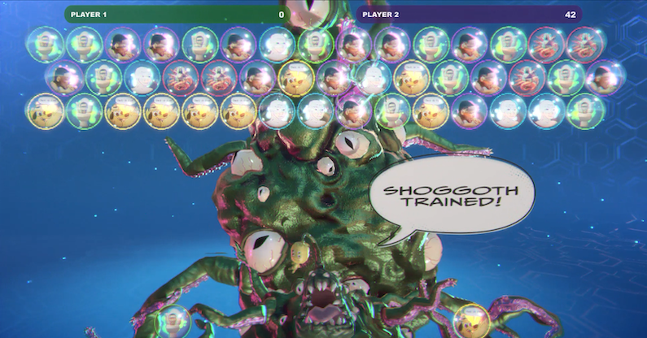

BrainRot Revolution is a motion-controlled video game in which players use their bodies to feed memes to Shoggoth — the tentacled creature borrowed from H.P. Lovecraft that has become an unofficial mascot for AI systems in Silicon Valley. Standing in front of a large screen, players lean side to side to aim Shoggoth's tentacle and raise their arms to fire coloured bubbles into a playfield seeded with internet memes: the loneley Wojak, the irony-poisoned Question Hound and his declaration that "This Is Fine", Shrimp Jesus, Skibidi Toilet, and a crudely rendered Will Smith eating endless spaghetti. Match three of the same meme and Shoggoth ingests them, grows larger, and advances to the next training level. The mechanic is deliberately simple — borrowed from the bubble shooter genre that exemplifies low-value, algorithmically optimised mobile gaming — and the physical interface makes players feel their participation in their body.
With each training level, the memes on screen grow more distorted and glitchy, visualising the degradation that occurs when AI systems are trained on their own outputs rather than human-made content. Players who succeed are not rewarded with resolution — they are rewarded with incoherence. The experience is designed to produce mixed emotions: players embody a disgusting creature that both repulses and amuses them. The work invites players to feel the contradictions of the algorithmic internet in an embodied format, rather than only engaging with them intellectually.
The game emerged from exploring model collapse—a phenomenon in AI where systems trained on synthetic data begin to degrade in quality. Just as AI models risk deteriorating when they recycle their own outputs, our collective imaginaries suffer when visions of the future are endlessly remixed from familiar scenarios.
Model collapse became both technical failure and cultural metaphor: the moment when our tools for imagining the future fail us. "Brain rot" extends this further—referring to both the perceived cognitive impact of consuming low-quality algorithmic content and the absurdist online vernacular that emerges from it.

Shoggoth feasts on a set of memes that he also creates, which are meant to represent a cross-section of Internet culture from the year BrainRot was produced (2025)
After devouring a final set of memes, Shoggoth reaches the limits of growth. The final stage of the game sees Shoggoth explode in a shower of pink goo.
When the screen clears, the following text appears:
This closing prompt opens a horizon of uncertainty without instruction. The work doesn't define a preferred future—it creates space for participants to articulate one, recognizing they're both shaped by and implicated in digital infrastructures.